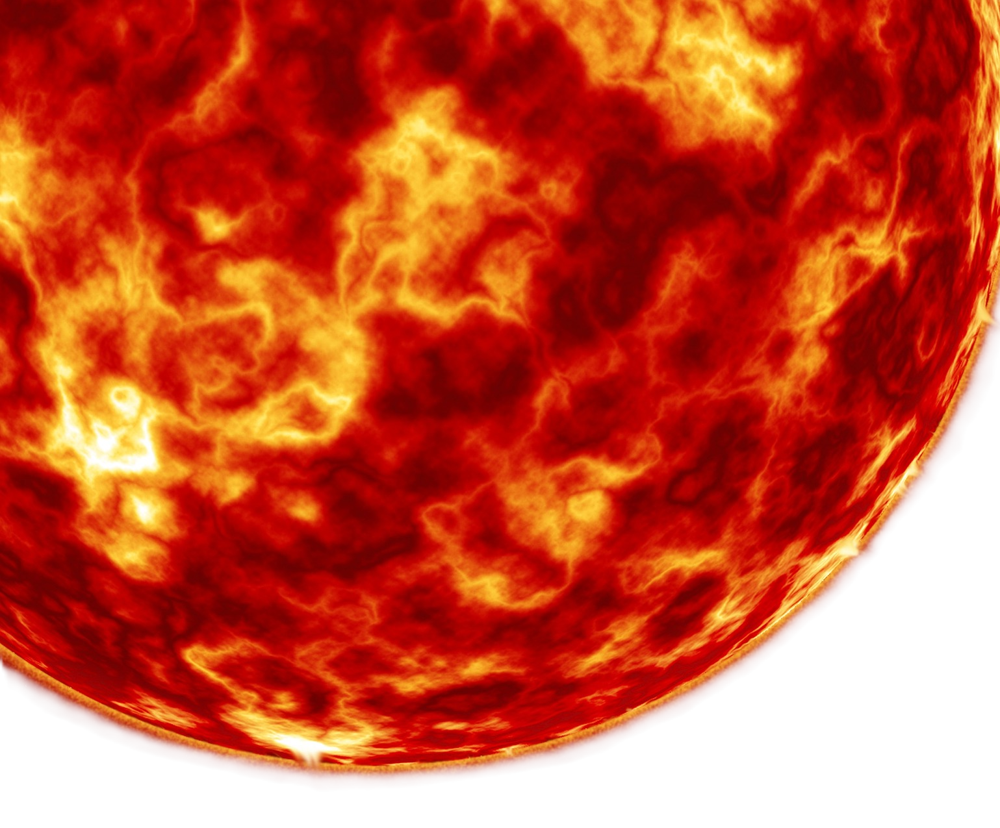
The Sun is the center of our solar system and contains 99.8% of its total mass. Its gravity keeps all the planets, moons, and smaller objects in orbit, and its light and heat make life on Earth possible. The Sun is a middle-aged star, constantly fusing hydrogen into helium in its core, powering the solar system with energy.
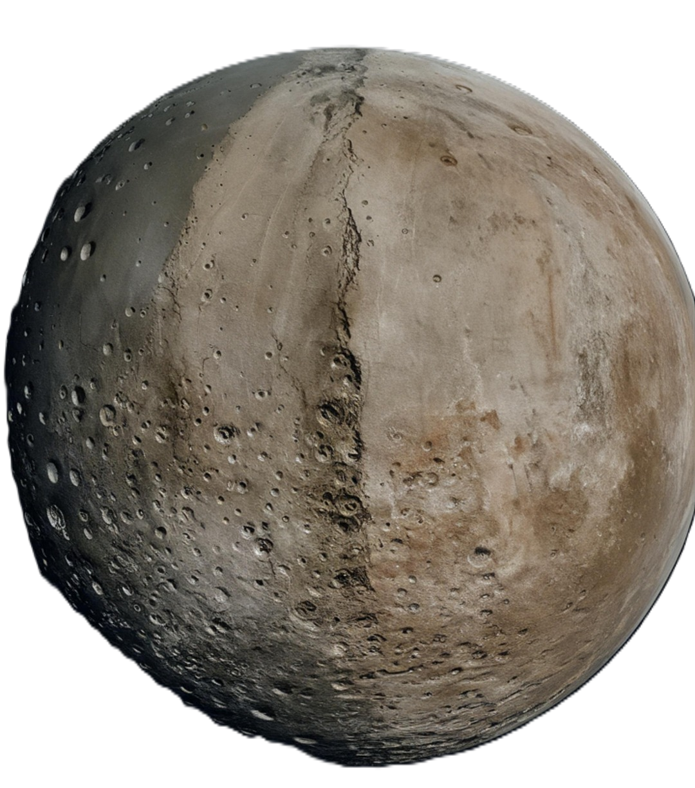
Mercury is the closest planet to the Sun and is a small, rocky world with extreme temperatures. Days can reach 800°F (427°C), while nights drop to −330°F (−201°C). It has almost no atmosphere, which allows these dramatic temperature swings.
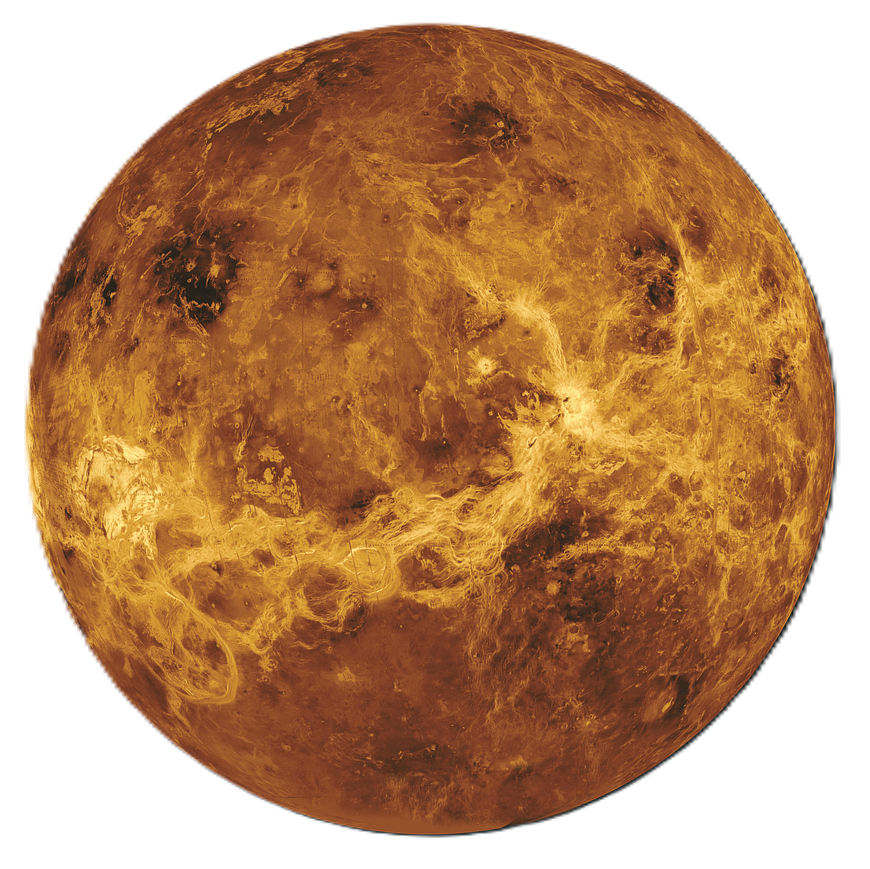
Venus is a rocky planet with a thick, toxic atmosphere of carbon dioxide and clouds of sulfuric acid. Surface pressures are 90 times stronger than Earth’s, and it rotates in the opposite direction of most planets, so the Sun rises in the west.

Earth is the only planet known to support life, thanks to its liquid water, breathable atmosphere, and protective magnetic field. About 71% of its surface is covered by oceans, and its climate and rotation create diverse habitats for millions of species.
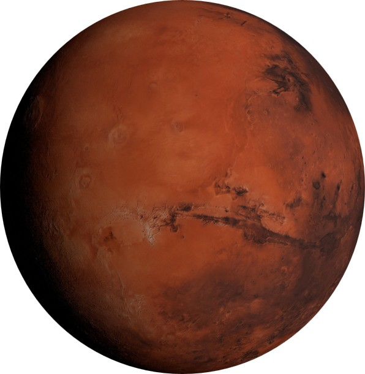
Mars is the red planet, known for its iron-rich soil and massive volcanoes, including Olympus Mons, the tallest volcano in the solar system. It has seasons, polar ice caps, and evidence that liquid water may have existed in the past. Mars has two small moons: Phobos and Deimos.
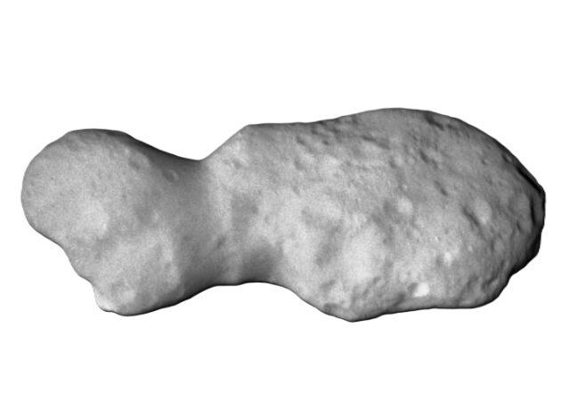
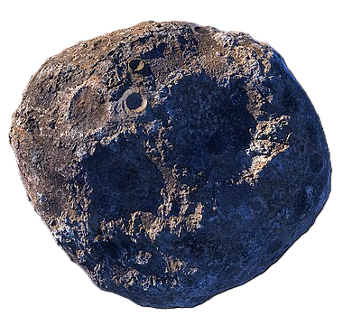
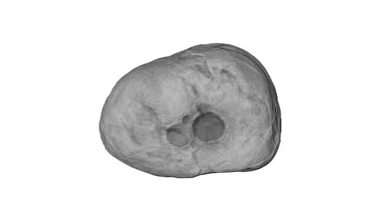
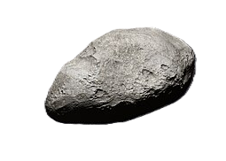
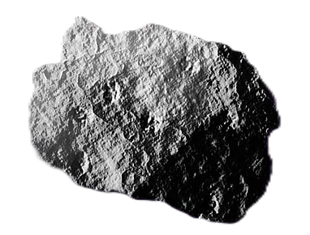
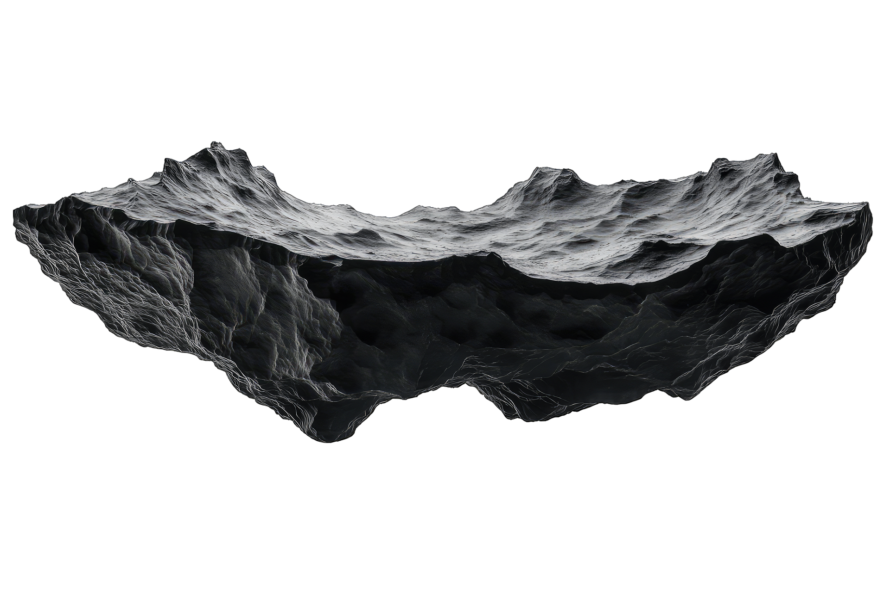
The asteroid belt lies between Mars and Jupiter and contains millions of rocky bodies. Most are small, irregularly shaped, and leftover building blocks from the early solar system that never formed into a planet. The asteroids vary in size from tiny rocks to ones big enough to be considered dwarf planets like Ceres.
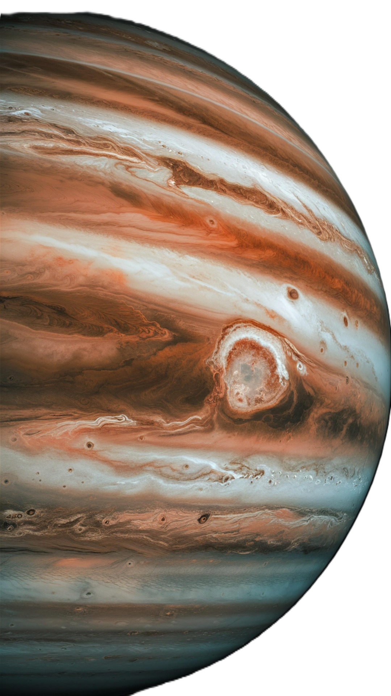
Jupiter is the largest planet in the solar system and a gas giant made mostly of hydrogen and helium. It has a strong magnetic field, dozens of moons, and a massive storm called the Great Red Spot that has been raging for centuries. Jupiter has 92 known moons, including the large Galilean moons: Io, Europa, Ganymede, and Callisto.
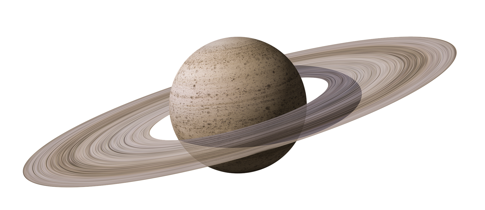
Saturn is famous for its stunning rings, made of ice and rock particles. Like Jupiter, it’s a gas giant with many moons, including Titan, which has a thick atmosphere and liquid methane lakes. Saturn is the planet with the most moons with 145 confirmed moons.
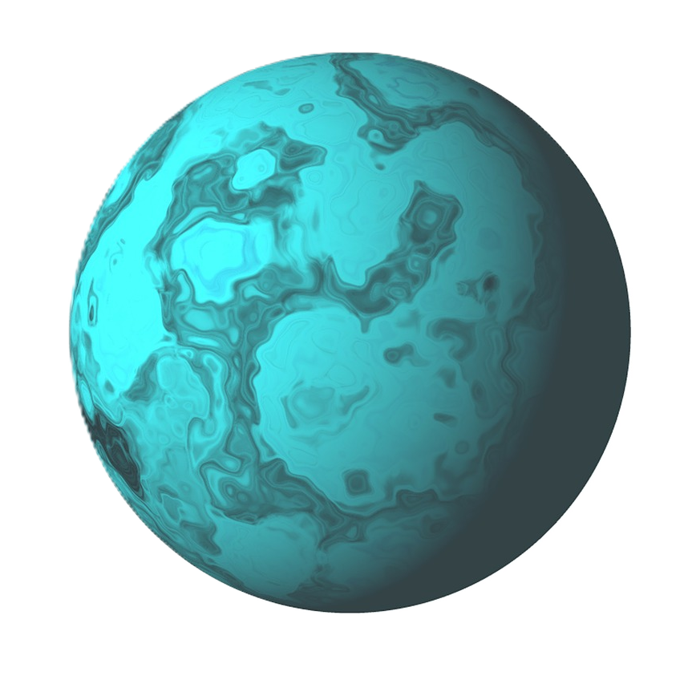
Uranus is an ice giant that rotates on its side, giving it extreme seasons that last decades. Its atmosphere is mostly hydrogen, helium, and methane, which gives the planet its blue-green color. Uranus has 27 known moons.
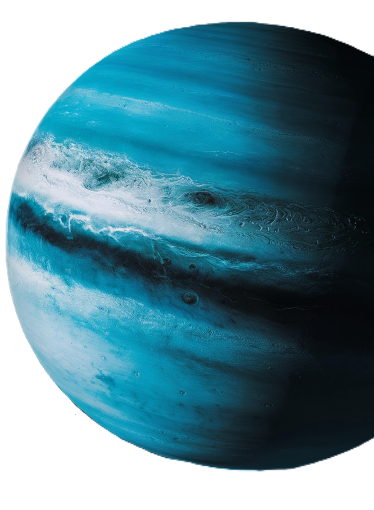
Neptune is an ice giant and the farthest planet from the Sun. It has supersonic winds, strong storms, and a deep blue color caused by methane in its atmosphere. It has 14 moons; the largest moon, Triton, orbits backward, suggesting it was captured by Neptune’s gravity.
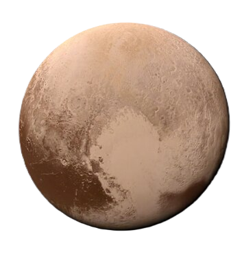
Pluto is a dwarf planet in the Kuiper Belt, far beyond Neptune. Once considered the ninth planet, it has a thin atmosphere, icy surface, and a heart-shaped glacier called Tombaugh Regio, making it a fascinating world despite its small size. Pluto has five known moons: Charon, Styx, Nix, Kerberos, and Hydra.